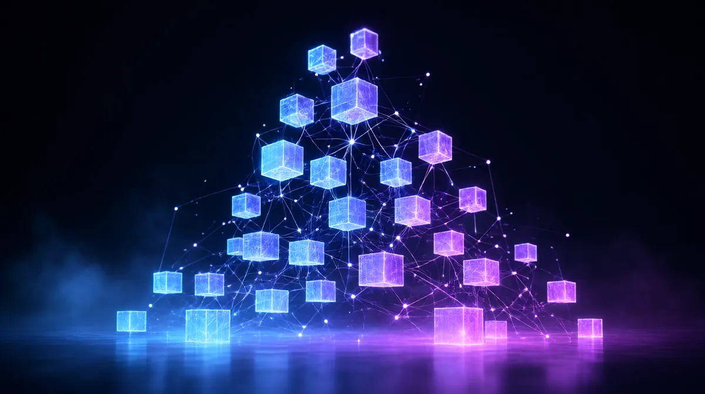

2:35Трансформационный тренинг · 2–3 ч
2:35Трансформационный тренинг · 2–3 чТренинг «Самозванец! Страх разоблачения»
А что будет, когда все узнают, что я не так хорош, как кажется? Имею ли я право заявить о своих компетенциях?
5 000 ₽Записаться
Наставничество по созданию собственной трансформационной игры или программы и личная проработка профессиональных «тормозов».

Индивидуальное сопровождение 1–2 месяца для специалистов, которые хотят создать свой глубокий продукт.
Формат в разработке. Это не курс повышения квалификации и не программа с выдачей диплома.
Встать в лист ожидания2:35Трансформационный тренинг · 2–3 чА что будет, когда все узнают, что я не так хорош, как кажется? Имею ли я право заявить о своих компетенциях?
 2:39Трансформационный тренинг · 2–3 ч
2:39Трансформационный тренинг · 2–3 чЕсли вы никак не определитесь со стоимостью своей услуги или продукта и это тормозит продвижение, останавливает продажи и приводит к выгоранию — этот тренинг для вас!
Как называть цену на свои услуги или продукт, не чувствуя себя грабителем или просителем?
 2:12Трансформационный тренинг · 2–3 ч
2:12Трансформационный тренинг · 2–3 ч«Всем-всем-всем я помогу, по-другому не могу! Мне в ответ не много надо: лишь признание, похвалу!»
А что, если проявляться так же естественно и гармонично, как дышать? Почему же ты себя тормозишь?
 2:26Трансформационный тренинг · 2–3 ч
2:26Трансформационный тренинг · 2–3 чХочешь продавать что-то другим? Сначала продай это себе! А ты продал себе свой продукт?
 2:54Игры, метафоры, смыслы · 2 минМетафорические ассоциативные карты (МАК)Откуда появились МАК, как они работают и почему картинка иногда говорит о нас больше, чем долгий разговор.✓ прочитано2:35Игры, метафоры, смыслы · 2 минТрансформационные игрыЧем Т-игра отличается от настольной игры и от тренинга, как она устроена и почему игра может быть серьёзной…✓ прочитано
2:54Игры, метафоры, смыслы · 2 минМетафорические ассоциативные карты (МАК)Откуда появились МАК, как они работают и почему картинка иногда говорит о нас больше, чем долгий разговор.✓ прочитано2:35Игры, метафоры, смыслы · 2 минТрансформационные игрыЧем Т-игра отличается от настольной игры и от тренинга, как она устроена и почему игра может быть серьёзной…✓ прочитано 2:21Деньги · 2 минКак называть цену и не оправдыватьсяПочему экспертам так трудно произнести стоимость своей работы. Психология цены: якоря, самоценность и страх отказа.✓ прочитано
2:21Деньги · 2 минКак называть цену и не оправдыватьсяПочему экспертам так трудно произнести стоимость своей работы. Психология цены: якоря, самоценность и страх отказа.✓ прочитаноСтоимость: · Ближайшая дата:
Напишите Марине — она пришлёт детали для оплаты.
Текст сообщения (подставится в Telegram и скопируется):
Все сессии проходят онлайн и вживую — с Мариной Степановой. Группы до 8 человек.
Бесплатный тест: 8 ситуаций → персональный разбор и следующий шаг.
Пройти тест